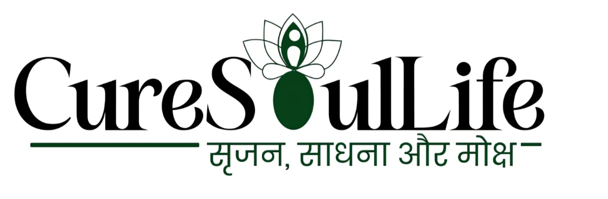

Work & initiatives
Work that builds clarity
Explained without selling language
This is not a list of services. It is a map of how the work is applied across different contexts — individuals, conversations, platforms, and long-term systems. Each initiative exists for a reason. Each addresses a specific gap. Each is designed for depth, not scale alone.

CureSoulLife
A platform for conscious living, inner work, and long-term transformation.
Why it exists
Modern life has made information easily available, but understanding rare. People know more, but struggle to integrate what they know. CureSoulLife exists to create a space where:
- Clarity is developed not borrowed
- Awareness is practiced not discussed
- Inner work becomes consistent not occasional
It is not designed for quick results. It is designed for real transformation.
Problem it addresses
- Constant stress without understanding its root
- Fragmented thinking due to information overload
- Emotional instability despite external success
- Lack of inner structure in decision-making
CureSoulLife addresses the gap between knowing and living.
Who it is for
- Individuals seeking grounded inner clarity
- Leaders carrying silent pressure
- Professionals navigating responsibility and meaning
- Communities ready for deeper, non-performative work
Dialogues & Retreats
Spaces for depth, silence, and real conversations.
Why it exists
Most conversations today are surface-level, driven by performance, opinion, or validation. Rarely do people sit in a space where they can think clearly, reflect honestly, and observe deeply. Dialogues & Retreats are designed to create that space.
What happens here
- Long-form conversations without interruption
- Silent reflection periods
- Question-led inquiry instead of instruction
- Shared understanding, not imposed answers
Who it is for
- Individuals seeking clarity beyond information
- Professionals ready to pause and reflect
- Leaders looking for depth without performance
- Seekers who want understanding, not escape
Media & Thought Platforms
Where ideas are explored, not simplified.
Why it exists
Modern media often prioritizes speed over depth and attention over understanding. This creates a gap where information is consumed but insight is missing. Media platforms are used here as a medium for long-form thinking, deep conversations, and structured exploration of life.
Problem it addresses
- Short attention culture
- Over-simplified content
- Noise without clarity
- Stimulation replacing understanding
What it includes
- Podcasts (The Sarvesh Mishra Show)
- Long-form discussions
- Research-based storytelling
- Thought-led content
Who it is for
- Individuals seeking clarity, not content
- Institutions and platforms looking for depth
- Media spaces open to long-form thinking
Future Vision
Building depth that can hold modern complexity.
Direction of the work
This work is not designed for scale alone. It is designed for precision and depth. The future direction includes:
- Institutional dialogues
- Global retreats
- Research-backed frameworks
- Long-form writing and knowledge systems
What it aims to address
Modern life is becoming more complex:
- Leadership pressure is increasing
- Mental fatigue is rising
- Identity confusion is common
- Meaning is becoming unclear
The vision is to create systems that can hold this complexity without simplifying it artificially.
Closing intent
If you represent an institution, a media platform, a retreat center, or a serious learning space — you can invite a dialogue.